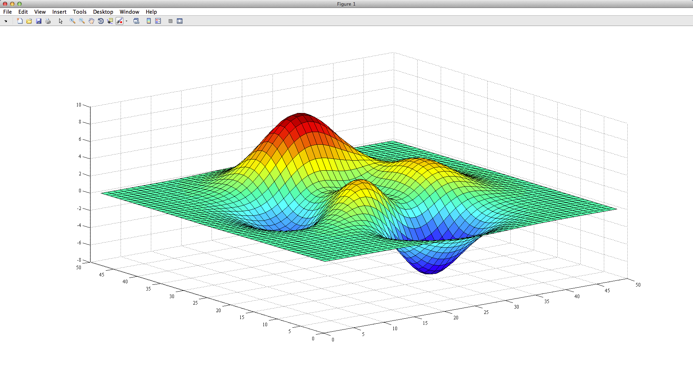
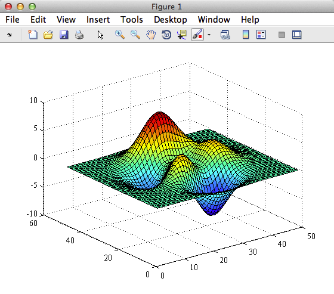
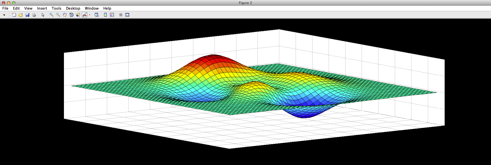

fullfig documentation
The fullfig function creates a full-screen figure.
Contents
Syntax
fullfig
fullfig('PropertyName',propertyvalue,...)
fullfig(h)
fullfig(...,'Border',BorderPercentage)
h = fullfig(...)Description
fullfig creates a new full-screen graphics figure. This automatically becomes the the current figure and raises it above all other figures on the screen until a new figure is either created or called.
fullfig('PropertyName',propertyvalue,...) creates a new figure object using the values of the properties specified. For a description of the properties, see Figure Properties. MATLAB uses default values for any properties that you do not explicitly define as arguments.
fullfig(h) does one of two things, depending on whether or not a figure with handle h exists. If h is the handle to an existing figure, fullfig(h) makes the figure identified by h the current figure, makes it visible, makes it full-screen, applies a Border if a Border is specified, and raises the figure above all other figures on the screen. The current figure is the target for graphics output. If h is not the handle to an existing figure, but is an integer, fullfig(h) creates a figure and assigns it the handle h. fullfig(h) where h is not the handle to a figure, and is not an integer, is an error.
fullfig(...,'Border',BorderPercentage) creates a Border between the perimeter of the figure and the perimeter of your screen. BorderPercentage must be in the range of 0 to 50, and can be a scalar value to apply the same percentage value to the width and height of the figure, or a two-element vector to apply different Borders in the x- and y- directions, respectively.
h = fullfig(...) returns the handle to the figure object.
Example 1: Initialize a full screen figure
To initialize a full-screen figure and plot the Matlab peaks, try
fullfig surf(peaks)
Example 2: Turn an existing figure into full-screen
Equivalently, you could some graphics already drawn in a figure, but you want to turn that figure into a full-screen figure. Let's start by closing the figure from the first example
close surf(peaks)
Now turn Figure 1 into a full-screen figure:
fullfig(1)
Example 3: Include a border
Now let's initialize a new, nearly-full-screen figure by including a border around the new figure. Set the border to 10 percent of the screen width and height:
fullfig('border',10)
surf(peaks)
Example 4: Format border and specify other figure properties
The 10 percent border created above was nice, but what if you want a wide-screen figure? To set the width of the figure to the full width of your monitor, and set the height of the figure to the height of your monitor minus 40 percent (20% on top and bottom), use a two-element border specification. Any other figure options may also be included, such as renderer or figure color.
fullfig(2,'border',[0 20],'renderer','painters','color','k')
Author Info
This function was written by Chad A. Greene of the University of Texas Institute for Geophysics on October 5, 2014 in sunny Austin, Texas.